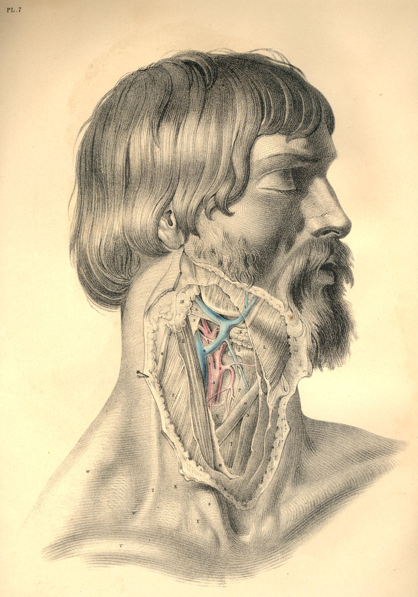
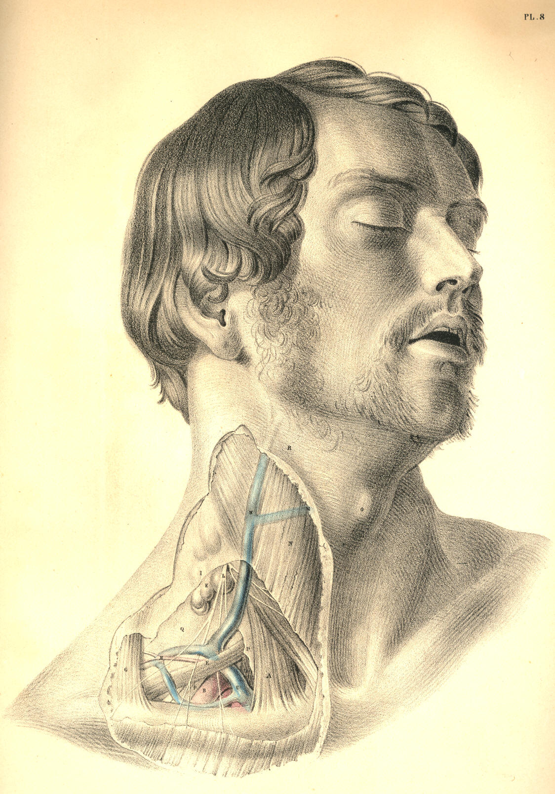

COMMENTARY ON PLATES 7 & 8.
THE SURGICAL DISSECTION OF THE SUBCLAVIAN AND CAROTID REGIONS,
THE RELATIVE ANATOMY OF THEIR CONTENTS.
A perfect knowledge of the relative anatomy of any of the surgical
regions of the body must include an acquaintance with the superposition
of parts contained in each region, as well as the plane relationship of
organs which hold the same level in each layer or anatomical stratum.
The dissections in Plates 7 and 8 exhibit both these modes of relation.
A portion of each of those superficial layers, which it was necessary to
divide, in order to expose a deeper organ, has been left holding its
natural level. Thus the order of superposition taken by the integument,
the fasciae, the muscles, bones, veins, nerves, and arteries, which
occupy both the surgical triangles of the neck, will be readily
recognised in the opposite Plates.
The depth of a bloodvessel or other organ from surface will vary for
many reasons, even though the same parts in the natural order of
superposition shall overlie the whole length of the vessel or organ
which we make search for. The principal of those reasons are:--1st, that
the stratified organs themselves vary in thickness at several places;
2d, that the organ or vessel which we seek will itself incline to
surface from deeper levels occupied elsewhere; 3d, that the normal
undulations of surface will vary the depth of the particular vessels,
&c.; and 4th, that the natural mobility of the superimposed parts
will
allow them to change place in some measure, and consequently influence
the relative position of the object of search. On this account it is
that the surgical anatomist chooses to give a fixed position to the
subject about to be operated on, in order to reduce the number of these
difficulties as much as possible.
In Plate 7 will be seen the surgical relationship of parts lying in the
vicinity of the common carotid artery, at the point of its bifurcation
into external and internal carotids. At this locality, the vessel will
be found, in general, subjacent to the following mentioned structures,
numbered from the superficies to its own level--viz., the common
integument and subcutaneous adipose membrane, which will vary in
thickness in several individuals; next, the platysma myoides muscle, F
L, which is identified with the superficial fascia, investing the outer
surface of the sterno-mastoid muscle; next, the deeper layer of the same
fascia, R S., which passes beneath the sterno-mastoid muscle, but over
the sheath of the vessels; and next, the sheath of the vessels, Q, which
invests them and isolates them from adjacent structures. Though the
vessel lies deeper than the level of the sterno-mastoid muscle at this
locality, yet it is not covered by the muscle in the same manner, as it
is lower down in the neck. At this place, therefore, though the actual
depth of the artery from surface will be the same, whether it be covered
or uncovered by the sterno-mastoid muscle, still we know that the
locality of the vessel relative to the parts actually superimposed will
vary accordingly. This observation will apply to the situation and
relative position of all the other vessels as well. Other occurrences
will vary the relations of the artery in regard to superjacent
structures, though the actual depth of the vessel from surface may be
the same. If the internal jugular vein covers the carotid artery, as it
sometimes does, or if a plexus of veins, gathering from the fore-part of
the neck or face, overlie the vessel, or if a chain of lymphatic bodies
be arranged upon it, as is frequently the case, the knowledge of such
occurrences will guard the judgment against being led into error by the
conventionalities of the descriptive method of anatomists. The normal
relative anatomy of the bloodvessels is taken by anatomists to be the
more frequent disposition of their main trunks and branches, considered
per se, and in connexion with
neighbouring parts. But it will be seen by
this avowal that those vessels are liable to many various conditions;
and such is the case, in fact. No anatomist can pronounce with exactness
the precise figure of vessels or other organs while they lie concealed
beneath the surface. An approach to truth is all that the best
experience can boast of. The form and relations of the carotid vessels
of Plate 7 may or may not be the same as those concealed beneath the
same region of Plate 8, at the point R.
The motions of the head upon the neck, or of the neck upon the trunk,
will influence the relative position of the vessels A C B, of Plate 7,
and therefore we take a fixed surgical position, in the expectation of
finding that the carotid artery projects from under the anterior border
of the upper third of the sterno-mastoid muscle, opposite the upper
border of the thyroid cartilage; at this situation of the vessels, viz.,
R, Plate 8, opposite O, the thyroid projection, is in general to be
found the anatomical relation of the vessels as they appear dissected in
Plate 7. Of these vessels, the main trunks are less liable to anomalous
character than the minor branches.
The relative position of the subclavian artery is as liable to be
influenced by the motions of the clavicle on the sternum, as that of the
carotid is by the motions of the lower jaw-bone on the skull, or by the
larynx, in its own motions at the fore-part of the neck. It becomes as
necessary, therefore, in the performance of surgical operations upon the
subclavian artery, to fix the clavicle by depressing it, as in Plate 8,
as it is to give fixity to the lower maxilla and larynx, in the position
of Plate 7, when the carotid is the subject of operation.
The same named structures, but different as to their parts, will be
found to overlie the subclavian artery as are found to conceal the
carotid artery. The skin, the fascia, and platysma muscle, the
sterno-cleido-mastoid muscle, the deep layer of the cervical fascia,
&c., cover both vessels. One additional muscle binds down the
subclavian
artery, viz., the scalenus anticus. The omo-hyoid relates to both
vessels, the anterior division to the carotid, the posterior to the
subclavian.
The carotid artery lies uncovered by the sterno-mastoid muscle, opposite
to the upper border of the thyroid cartilage, or the hyoid bone; and the
subclavian artery emerges from under cover of a different part of the
same muscle, opposite the middle of the clavicle. These points of
relationship to the skeletal parts can be ascertained by the touch, in
both instances, even in the undissected body. The thyroid point, O, of
Plate 8, indicates the line, R N, which the carotid artery traverses in
the same figure, along the anterior border of the sterno-mastoid muscle,
as seen in the dissected region of Plate 7. The mid-point of the
clavicle, U, Plate 7, and the top of the sternum in the same figure,
will, while the eye follows the arching line, Z X T V, indicate with
correctness the arching course of the subclavian, such as is represented
in the dissection of that vessel, B, Plate 8.
The subclavian artery has no special sheath, properly so called; but the
deep layer of the cervical fascia, P, Plate 8, which passes under A, the
clavicular portion of the sterno-mastoid muscle, and becomes of
considerable thickness and density, sheaths over the vessel in this
region of its course.
A very complex condition of the veins which join the external jugular at
this part of the course of the subclavian artery is now and then to be
found overlying that vessel. If the hemorrhage consequent upon the
opening of these veins, or that of the external jugular, be so profuse
as to impede the operation of ligaturing the subclavian artery, it may
in some measure be arrested by compressing them against the resisting
parts adjacent, when the operator, feeling for D, the scalenus muscle,
and the first rib to which it is attached, cannot fail to alight upon
the main artery itself, B, Plate 8.
The middle of the shaft of the clavicle is a much safer guide to the
vessel than are the muscles which contribute to form this posterior
triangle of the neck, in which the subclavian vessel is located. The
form or position of the clavicle in the depressed condition of the
shoulder, as seen in Plate 8, is invariable; whereas that of the
trapezius and sterno-mastoid muscles is inconstant, these muscles being
found to stand at unequal intervals from each other in several bodies.
The space between the insertions of both these muscles is indefinite,
and may vary in degrees of width from the whole length of the clavicle
to half an inch; or, as in some instances, leaving no interval whatever.
The position of the omo-hyoid muscle will not be accounted a sure guide
to the locality of the subclavian artery, since, in fact, it varies
considerably as to its relationship with that vessel. The tense cords of
the brachial plexus of nerves, F, Plate 8, which will be found, for the
most part, ranging along the acromial border of the artery, are a much
surer guide to the vessel.
On comparing the subclavian artery, at B, Plate 8, with the common
carotid artery, at A, Plate 7, I believe that the former will be found
to exhibit, on the whole a greater constancy in respect to the
following-mentioned condition--viz., a single main arterial trunk arches
over the first rib to pass beneath the middle of the clavicle, while the
carotid artery opposite the thyroid piece of the larynx is by no means
constantly single as a common carotid trunk. The place of division of
the common carotid is not definite, and, therefore, the precise
situation in the upper two-thirds of the neck, where it may present as a
single main vessel, cannot be predicted with certainty in the
undissected body. There is no other main artery of the body more liable
to variation than that known as external carotid. It is subject to as
many changes of character in respect to the place of its branching from
the common carotid, and also in regard to the number of its own
branches, as any of the lesser arteries of the system. It is but as an
aggregate of the branches of that main arterial trunk which ranges from
the carotid foramen of the temporal bone to the aorta; and, as a branch
of a larger vessel, it is, therefore, liable to spring from various
places of the principal trunk, just as we find to be the case with all
the other minor branches of the larger arteries. Its name, external
carotid, is as unfittingly applied to it, in comparison with the vessel
from which it springs, as the name external subclavian would be if
applied to the thyroid axis of the larger subclavian vessel. The
nomenclature of surgical anatomy does not, however, court a
philosophical inquiry into that propriety of speech which comparative
science demands, nor is it supposed to be necessary in a practical point
of view.
It will, however, sound more euphoneously with reason, and at the same
time, I believe, be found not altogether unrelated to the useful, if,
when such conditions as the "anomalies of form" present themselves, we
can advance an interpretation of the same, in addition to the dry record
of them as isolated facts. Comparative anatomy, which alone can furnish
these interpretations, will therefore prove to be no alien to the
practical, while it may lend explanation to those bizarreries which
impede the way of the anthropotomist. All the anomalies of form, both as
regards the vascular, the muscular, and the osseous systems of the human
body, are analyzed by comparison through the animal series. Numerous
cases are on record of the subclavian artery being found complicated
with supernumerary ribs jutting from the 5th, 6th, or 7th cervical
vertebrae. [Footnote] To these I shall add another, in respect of the
carotid arteries--viz., that I have found them complicated with an
osseous shaft of bone, taking place of the stylo-hyoid ligament, a
condition which obtains permanently in the ruminant and other classes of
mammals.
[Footnote: I have given an explanation of these facts in my work on
Comparative Osteology and the Archetype Skeleton, to which, and also to
Professor Owen's work, entitled Homologies of the Vertebrate Skeleton, I
refer the reader.]
DESCRIPTION OF PLATES 7 & 8.
PLATE 7.
A. Common carotid at its place of division.
B. External carotid.
C. Internal carotid, with the descending branch of the ninth nerve lying
on it.
D. Facial vein entering the internal jugular vein.
E. Sterno-mastoid muscle, covered by
F. Part of the platysma muscle.
G. External jugular vein.
H. Parotid gland, sheathed over by the cervical fascia.
I. Facial vein and artery seen beneath the facial fibres of the
platysma.
K. Submaxillary salivary gland.
L. Upper part of the platysma muscle cut.
M. Cervical fascia cut.
N. Sterno-hyoid muscle.
O. Omo-hyoid muscle.
P. Sterno-thyroid muscle.
Q. Fascia proper of the vessels.
R. Layer of the cervical fascia beneath the sterno-mastoid muscle.
S. Portion of the same fascia.
T. External jugular vein injected beneath the skin.
U. Clavicle at the mid-point, where the subclavian artery passes
beneath it.
V. Locality of the subclavian artery in the third part of its course.
W. Prominence of the trapezius muscle.
X. Prominence of the clavicular portion of the sterno-cleido-mastoid
muscle.
Y. Place indicating the interval between the clavicular and sternal
insertions of sterno-cleido-mastoid muscle.
Z. Projection of the sternal portion of the sterno-cleido-mastoid
muscle.

Plate 7
PLATE 8.
A. Clavicular attachment of the sterno-mastoid muscle lying over the
internal jugular vein, &c.
B. Subclavian artery in the third part of its course.
C. Vein formed by the union of external jugular, scapular, and other
veins.
D. Scalenus anticus muscle stretching over the artery, and separating it
from the internal jugular vein.
E. Post-half of omo-hyoid muscle.
F. Inner branches of the brachial plexus of nerves.
G. Clavicular portion of trapezius muscle.
H. Transversalis colli artery.
I. Layer of the cervical fascia, which invests the sterno-mastoid and
trapezius muscles.
K. Lymphatic bodies lying between two layers of the cervical fascia.
L. Descending superficial branches of the cervical plexus of nerves.
M. External jugular vein seen under the fascia which invests the
sterno-mastoid muscle.
N. Platysma muscle cut on the body of sterno-mastoid muscle.
O. Projection of the thyroid cartilage.
P. Layer of the cervical fascia lying beneath the clavicular portion of
the sterno-mastoid muscle.
Q. Layer of the cervical fascia continued from the last over the
subclavian artery and brachial plexus of nerves.

Plate 8
COMMENTARY ON PLATES 9
& 10